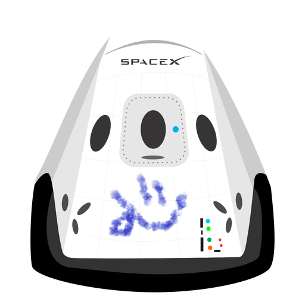

Hyperblog
Tu blog de confianza
Este es el titulo atractivo e interesante del post
Y este es el párrafo de inicio donde vamos a explicar las cosas increíbles que se pueden hacer con ramas

Los blogs son la mejor forma de compartir información y tus ideas, Mucho mas que ir a conferencias o salir en Youtube, Execpto si eres un rockstar. Pero estadisticamente no lo eres.... por ahora
Suscribete y dale like